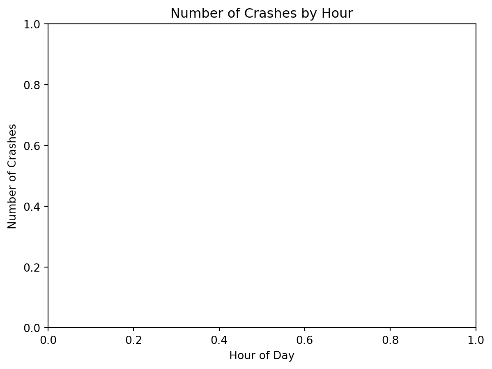
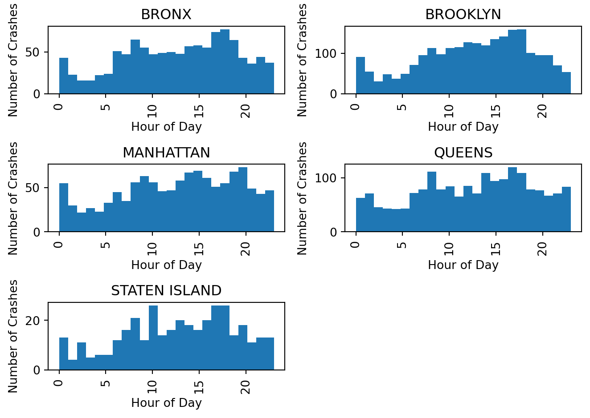

import random# function to choose the door the host opensdef open_door(win, choice, doors):# set containing doors that the host cannot open do_not_open = {win, choice} # set containing all door indexes all_doors =set(doors) # list containing all the doors that the host can open options =list(all_doors - do_not_open) # choose a random door for the host to open opened = random.choice(options) return opened# function to choose the door the player switches todef switch_doors(choice, opened_door, doors):# set containing the doors that the player cannot open cannot_open = {choice, opened_door} # set containing all door indexes all_doors =set(doors) # list containing the doors that the player can choose options =list(all_doors - cannot_open) # choose a random door for the player to switch to switched_door = random.choice(options) return switched_door# function to determine if staying results in win or lossdef stay(win, choice):# if chosen door is the winning door, win = Trueif win == choice: return1# else, chosen door is not winning door so, win = Falseelse: return0# function to determine if switching results in win or lossdef switch(win, choice, opened_door, doors):# must choose a random door to switch to if there are more then 3 doorsif (len(doors) !=3): switched_door = switch_doors(choice, opened_door, doors)# if newly chosen door is winning door, win = Trueif switched_door == win: return1# if newly chosen door is not winning door, win = Falseelse: return0# if ndoors is 3, we do not need to compute the door to switch to # if initially chosen door is the prize door, switching results in loss elif (win == choice): return0# otherwise initially chosen door is not prize, thus switching will win else: return1# simulation functiondef montyhall(ndoors, ntrials):# initialize our counts to 0 switch_win_count =0 stay_win_count =0# do ntrialsfor n inrange(ntrials): # create a list of doors (indexs start at 0) doors = [i for i inrange(ndoors)] # choose a winning door randomly win = random.choice(doors) # player choses any random door choice = random.choice(doors) # host opens a new door (without prize behind it) opened_door = open_door(win, choice, doors) # if stay results in a win (1), increase stay win countif stay(win, choice): stay_win_count +=1# if switch results in a win (1), increase switch win countif switch(win, choice, opened_door, doors): switch_win_count +=1# average of winning if player stays stay_result = stay_win_count/ntrials # average of winning if player switched switch_result = switch_win_count/ntrials return (stay_result, switch_result)# test casesprint("The proportion of winning if the player stays in the 3 door ""scenario is", montyhall(3,1000)[0])print("The proportion of winning if the player switches in the 3 door ""scenario is", montyhall(3,1000)[1])print("The proportion of winning if the player stays in the 5 door ""scenario is", montyhall(5,1000)[0])print("The proportion of winning if the player switches in the 5 door ""scenario is", montyhall(5,1000)[1])
The proportion of winning if the player stays in the 3 door scenario is 0.314
The proportion of winning if the player switches in the 3 door scenario is 0.684
The proportion of winning if the player stays in the 5 door scenario is 0.186
The proportion of winning if the player switches in the 5 door scenario is 0.257
Q4: Using Monte Carlo to Approximate Pi
Solution from Bedard Kaitlyn.
import numpy as npimport scipy.stats as stdef pi_approx(n):# set random seed for replication np.random.seed(77) # array of size n of random floats in range [0,1) x = np.random.random(n) # array of size n of random floats in range [0,1) y = np.random.random(n) # array where 1 represents a point that lies in 1st quadrant of unit circle approx_array = ((x**2) + (y**2))<=1# mean of array approximates proportion of unit square and unit circle - pi/4 approx = approx_array.mean() # 95% confidence interval for estimate ci = st.norm.interval(alpha=0.95, loc=np.mean(4*approx_array),scale=st.sem(4*approx_array)) # return estimate of pireturn (4*approx), ci # test casesprint("The pi approximation with a sample size of 1000 is", pi_approx(1000)[0])print("The 95% confidence interval at n=1000 is", pi_approx(1000)[1])print("The pi approximation with a sample size of 2000 is", pi_approx(2000)[0])print("The 95% confidence interval at n=2000 is", pi_approx(2000)[1])print("The pi approximation with a sample size of 4000 is", pi_approx(4000)[0])print("The 95% confidence interval at n=4000 is", pi_approx(4000)[1])print("The pi approximation with a sample size of 8000 is", pi_approx(8000)[0])print("The 95% confidence interval at n=8000 is", pi_approx(8000)[1])
The pi approximation with a sample size of 1000 is 3.128
The 95% confidence interval at n=1000 is (3.0255865582273396, 3.2304134417726607)
The pi approximation with a sample size of 2000 is 3.154
The 95% confidence interval at n=2000 is (3.0823926305354026, 3.2256073694645973)
The pi approximation with a sample size of 4000 is 3.167
The 95% confidence interval at n=4000 is (3.116659338122253, 3.2173406618777465)
The pi approximation with a sample size of 8000 is 3.1455
The 95% confidence interval at n=8000 is (3.10957215893032, 3.1814278410696804)
Q5
Find the first 10-digit prime number occurring in consecutive digits of pi.
Solution from Lunetta Giovanni.
# importing these libraries allows us to use arbitrary-precision decimal # arithmetic and prime numbersimport decimalfrom sympy import isprime# defines the proper functiondef find_10_digit_prime_in_e():# sets the precision of the decimal module to 10000, # meaning that we will be working with 10000 decimal digits of e decimal.getcontext().prec =10000# use the built-in function in python's decimal module to compute# the value of e and store it in a variable e e = decimal.Decimal(1).exp()# convert the value of e to a string e =str(e)# remove the decimal point from the string representation of e e = e.replace(".", "")# starts a for loop that will run once for each possible starting # index of a 10-digit sequence in the string efor i inrange(len(e) -10):# creates a variable named num that is set # to the 10-digit sequence# starting at index i of the string e num =int(e[i:i+10])# if the number is prime it returns the numberif isprime(num):return numprint(find_10_digit_prime_in_e())print("Help from:")print("https://stackoverflow.com/")print("https://math.stackexchange.com/")
7427466391
Help from:
https://stackoverflow.com/
https://math.stackexchange.com/
Q6 NYC Crash data preparation
Solutions from Bedard Kaitlyn.
Question 1
Importing January 2023 NYC crash data.
import pandas as pd# import datajan23 = pd.read_csv("./data/nyc_crashes_202301.csv")# create a copy for cleaningjan23_cleaning = jan23.copy()# gives the dimensions of our datajan23.shape# list containing our variablesvars=list(jan23)
Question 2
Our discrete variables are CRASH DATE, CRASH TIME, BOROUGH, ZIPCODE, ON STREET NAME, CROSS STREET NAME, OFF STREET NAME, CONTRIBUTING FACTOR VEHICLE 1, CONTRIBUTING FACTOR VEHICLE 2, CONTRIBUTING FACTOR VEHICLE 3, CONTRIBUTING FACTOR VEHICLE 4, CONTRIBUTING FACTOR VEHICLE 5, COLLISION_ID, VEHICLE TYPE CODE 1, VEHICLE TYPE CODE 2,VEHICLE TYPE CODE 3, VEHICLE TYPE CODE 4, VEHICLE TYPE CODE 5. We do not include COLLISION_ID because each ID is unique, and we do not include CONTRIBUTING FACTOR VEHICLE 1 because it will be discussed in question 7. The output of the code consists of the percent of missing entries for each variable, the descriptive statistics for the continuous variables, and the frequency tables for the discrete variables.
# percent missing for each variableprint((jan23.isnull().sum() *100)/len(jan23))# descriptive statistics for continuous variablesprint(jan23.describe())# frequency tables for discrete variablesprint(jan23["CRASH DATE"].value_counts(dropna=False))print(jan23["CRASH TIME"].value_counts(dropna=False))print(jan23["BOROUGH"].value_counts(dropna=False))print(jan23["ZIP CODE"].value_counts(dropna=False))print(jan23["ON STREET NAME"].value_counts(dropna=False))print(jan23["CROSS STREET NAME"].value_counts(dropna=False))print(jan23["OFF STREET NAME"].value_counts(dropna=False))#jan23["CONTRIBUTING FACTOR VEHICLE 1"].value_counts(dropna=False)print(jan23["CONTRIBUTING FACTOR VEHICLE 2"].value_counts(dropna=False))print(jan23["CONTRIBUTING FACTOR VEHICLE 3"].value_counts(dropna=False))print(jan23["CONTRIBUTING FACTOR VEHICLE 4"].value_counts(dropna=False))print(jan23["CONTRIBUTING FACTOR VEHICLE 5"].value_counts(dropna=False))print(jan23["CONTRIBUTING FACTOR VEHICLE 1"].value_counts(dropna=False))print(jan23["VEHICLE TYPE CODE 1"].value_counts(dropna=False))print(jan23["VEHICLE TYPE CODE 2"].value_counts(dropna=False))print(jan23["VEHICLE TYPE CODE 3"].value_counts(dropna=False))print(jan23["VEHICLE TYPE CODE 4"].value_counts(dropna=False))print(jan23["VEHICLE TYPE CODE 5"].value_counts(dropna=False))
CRASH DATE 0.000000
CRASH TIME 0.000000
BOROUGH 33.961721
ZIP CODE 33.961721
LATITUDE 6.720391
LONGITUDE 6.720391
LOCATION 6.720391
ON STREET NAME 26.061304
CROSS STREET NAME 52.295294
OFF STREET NAME 73.938696
NUMBER OF PERSONS INJURED 0.000000
NUMBER OF PERSONS KILLED 0.000000
NUMBER OF PEDESTRIANS INJURED 0.000000
NUMBER OF PEDESTRIANS KILLED 0.000000
NUMBER OF CYCLIST INJURED 0.000000
NUMBER OF CYCLIST KILLED 0.000000
NUMBER OF MOTORIST INJURED 0.000000
NUMBER OF MOTORIST KILLED 0.000000
CONTRIBUTING FACTOR VEHICLE 1 0.762700
CONTRIBUTING FACTOR VEHICLE 2 25.600806
CONTRIBUTING FACTOR VEHICLE 3 90.358325
CONTRIBUTING FACTOR VEHICLE 4 97.337746
CONTRIBUTING FACTOR VEHICLE 5 99.150957
COLLISION_ID 0.000000
VEHICLE TYPE CODE 1 1.899554
VEHICLE TYPE CODE 2 36.782271
VEHICLE TYPE CODE 3 91.106634
VEHICLE TYPE CODE 4 97.510433
VEHICLE TYPE CODE 5 99.194129
dtype: float64
ZIP CODE LATITUDE LONGITUDE NUMBER OF PERSONS INJURED \
count 4589.000000 6482.000000 6482.000000 6949.000000
mean 10902.771192 40.243561 -73.051578 0.504101
std 523.924934 4.384470 7.957957 0.816949
min 10001.000000 0.000000 -74.250150 0.000000
25% 10457.000000 40.662284 -73.965151 0.000000
50% 11209.000000 40.710917 -73.921900 0.000000
75% 11249.000000 40.771597 -73.864266 1.000000
max 11694.000000 40.912827 0.000000 21.000000
NUMBER OF PERSONS KILLED NUMBER OF PEDESTRIANS INJURED \
count 6949.000000 6949.000000
mean 0.002302 0.116420
std 0.050847 0.400564
min 0.000000 0.000000
25% 0.000000 0.000000
50% 0.000000 0.000000
75% 0.000000 0.000000
max 2.000000 19.000000
NUMBER OF PEDESTRIANS KILLED NUMBER OF CYCLIST INJURED \
count 6949.000000 6949.000000
mean 0.000720 0.034250
std 0.026816 0.182672
min 0.000000 0.000000
25% 0.000000 0.000000
50% 0.000000 0.000000
75% 0.000000 0.000000
max 1.000000 2.000000
NUMBER OF CYCLIST KILLED NUMBER OF MOTORIST INJURED \
count 6949.000000 6949.000000
mean 0.000288 0.333285
std 0.016964 0.750946
min 0.000000 0.000000
25% 0.000000 0.000000
50% 0.000000 0.000000
75% 0.000000 0.000000
max 1.000000 8.000000
NUMBER OF MOTORIST KILLED COLLISION_ID
count 6949.000000 6.949000e+03
mean 0.001295 4.598827e+06
std 0.039768 2.205264e+03
min 0.000000 4.594332e+06
25% 0.000000 4.597033e+06
50% 0.000000 4.598902e+06
75% 0.000000 4.600709e+06
max 2.000000 4.602743e+06
01/13/2023 292
01/19/2023 278
01/12/2023 268
01/01/2023 265
01/17/2023 249
01/10/2023 248
01/04/2023 245
01/18/2023 242
01/23/2023 240
01/14/2023 235
01/25/2023 234
01/09/2023 231
01/05/2023 229
01/26/2023 227
01/06/2023 226
01/22/2023 226
01/20/2023 225
01/28/2023 222
01/21/2023 218
01/24/2023 217
01/16/2023 214
01/03/2023 214
01/11/2023 212
01/27/2023 201
01/02/2023 196
01/31/2023 192
01/15/2023 189
01/30/2023 186
01/08/2023 183
01/07/2023 173
01/29/2023 172
Name: CRASH DATE, dtype: int64
0:00 110
15:00 72
18:00 69
17:00 68
10:00 62
...
16:18 1
4:42 1
12:06 1
3:19 1
3:57 1
Name: CRASH TIME, Length: 1232, dtype: int64
NaN 2360
BROOKLYN 1611
QUEENS 1272
BRONX 761
MANHATTAN 757
STATEN ISLAND 188
Name: BOROUGH, dtype: int64
NaN 2360
11207.0 123
11236.0 83
11208.0 79
11212.0 67
...
11001.0 1
10121.0 1
11109.0 1
10280.0 1
10169.0 1
Name: ZIP CODE, Length: 181, dtype: int64
NaN 1811
BELT PARKWAY 121
BROOKLYN QUEENS EXPRESSWAY 71
LONG ISLAND EXPRESSWAY 70
FDR DRIVE 53
...
122 AVENUE 1
EAST MOUNT EDEN AVENUE 1
EAST 24 STREET 1
230 STREET 1
ASCAN AVENUE 1
Name: ON STREET NAME, Length: 1537, dtype: int64
NaN 3634
3 AVENUE 37
BROADWAY 34
2 AVENUE 31
ATLANTIC AVENUE 23
...
EAST 137 STREET 1
WEST SERVICE ROAD 1
WEST 81 STREET 1
167 STREET 1
113 AVENUE 1
Name: CROSS STREET NAME, Length: 1521, dtype: int64
NaN 5138
49-21 METROPOLITAN AVENUE 3
985 RICHMOND AVENUE 3
ATLANTIC AVENUE 3
560 WINTHROP STREET 3
...
1330 PARK AVENUE 1
93-08 241 STREET 1
53-22 ROOSEVELT AVENUE 1
20-36 PLAINVIEW AVENUE 1
102 STRYKER STREET 1
Name: OFF STREET NAME, Length: 1790, dtype: int64
Unspecified 4373
NaN 1779
Driver Inattention/Distraction 300
Other Vehicular 89
Following Too Closely 69
Passing or Lane Usage Improper 59
Traffic Control Disregarded 45
Failure to Yield Right-of-Way 38
Passing Too Closely 29
Unsafe Speed 25
Driver Inexperience 22
Backing Unsafely 18
View Obstructed/Limited 17
Aggressive Driving/Road Rage 12
Reaction to Uninvolved Vehicle 12
Turning Improperly 11
Unsafe Lane Changing 11
Pavement Slippery 9
Pedestrian/Bicyclist/Other Pedestrian Error/Confusion 8
Oversized Vehicle 5
Alcohol Involvement 3
Failure to Keep Right 2
Traffic Control Device Improper/Non-Working 2
Obstruction/Debris 2
Passenger Distraction 2
Outside Car Distraction 2
Other Lighting Defects 1
Fatigued/Drowsy 1
Illnes 1
Shoulders Defective/Improper 1
Prescription Medication 1
Name: CONTRIBUTING FACTOR VEHICLE 2, dtype: int64
NaN 6279
Unspecified 621
Other Vehicular 18
Following Too Closely 12
Driver Inattention/Distraction 9
Passing or Lane Usage Improper 2
Brakes Defective 1
Obstruction/Debris 1
Unsafe Speed 1
Passing Too Closely 1
View Obstructed/Limited 1
Pavement Slippery 1
Turning Improperly 1
Reaction to Uninvolved Vehicle 1
Name: CONTRIBUTING FACTOR VEHICLE 3, dtype: int64
NaN 6764
Unspecified 177
Other Vehicular 4
Following Too Closely 2
Obstruction/Debris 1
Passing or Lane Usage Improper 1
Name: CONTRIBUTING FACTOR VEHICLE 4, dtype: int64
NaN 6890
Unspecified 57
Obstruction/Debris 1
Other Vehicular 1
Name: CONTRIBUTING FACTOR VEHICLE 5, dtype: int64
Driver Inattention/Distraction 1700
Unspecified 1615
Failure to Yield Right-of-Way 549
Following Too Closely 438
Passing or Lane Usage Improper 332
Unsafe Speed 278
Passing Too Closely 258
Backing Unsafely 211
Traffic Control Disregarded 193
Other Vehicular 180
Turning Improperly 180
Driver Inexperience 145
Alcohol Involvement 124
Unsafe Lane Changing 118
View Obstructed/Limited 70
Reaction to Uninvolved Vehicle 63
Aggressive Driving/Road Rage 54
Pedestrian/Bicyclist/Other Pedestrian Error/Confusion 54
NaN 53
Pavement Slippery 48
Fell Asleep 39
Brakes Defective 30
Oversized Vehicle 28
Steering Failure 21
Passenger Distraction 18
Outside Car Distraction 17
Lost Consciousness 17
Glare 14
Tire Failure/Inadequate 13
Obstruction/Debris 12
Illnes 10
Drugs (illegal) 10
Accelerator Defective 9
Failure to Keep Right 9
Driverless/Runaway Vehicle 6
Pavement Defective 6
Physical Disability 5
Fatigued/Drowsy 4
Animals Action 4
Other Electronic Device 2
Tinted Windows 2
Tow Hitch Defective 2
Cell Phone (hand-Held) 2
Windshield Inadequate 1
Texting 1
Prescription Medication 1
Traffic Control Device Improper/Non-Working 1
Lane Marking Improper/Inadequate 1
Other Lighting Defects 1
Name: CONTRIBUTING FACTOR VEHICLE 1, dtype: int64
Sedan 3336
Station Wagon/Sport Utility Vehicle 2399
Taxi 173
Pick-up Truck 156
Bus 133
...
VAn 1
Motorized 1
electric s 1
TRAILER 1
FDNY AMBUL 1
Name: VEHICLE TYPE CODE 1, Length: 64, dtype: int64
NaN 2556
Sedan 1898
Station Wagon/Sport Utility Vehicle 1383
Bike 180
Box Truck 148
...
Tanker 1
FOGLIFT 1
School bus 1
TOW TRUCK 1
wheelchair 1
Name: VEHICLE TYPE CODE 2, Length: 77, dtype: int64
NaN 6331
Sedan 322
Station Wagon/Sport Utility Vehicle 247
Pick-up Truck 15
Tractor Truck Diesel 5
Box Truck 5
Van 5
Taxi 4
Bus 3
Convertible 2
Flat Bed 2
Moped 2
UTILITY TR 1
Carry All 1
Tractor Truck Gasoline 1
Tow Truck / Wrecker 1
FLAT 1
Bike 1
Name: VEHICLE TYPE CODE 3, dtype: int64
NaN 6776
Sedan 88
Station Wagon/Sport Utility Vehicle 69
Pick-up Truck 8
Tractor Truck Diesel 2
Dump 1
Flat Bed 1
SEMI-TRUCK 1
Convertible 1
4 dr sedan 1
PK 1
Name: VEHICLE TYPE CODE 4, dtype: int64
NaN 6893
Station Wagon/Sport Utility Vehicle 27
Sedan 26
Pick-up Truck 1
Box Truck 1
Taxi 1
Name: VEHICLE TYPE CODE 5, dtype: int64
Question 3
For the most part the values of LATITUDE and LONGITUDE all look legitimate, however there are a handful of entries – 76 – that are 0.000000, which is not possible considering NYC is not located at this longitude or latitude. The below code shows the frequency tables for these two variables, and it then changes the entries with 0.0s to missing values.
import numpy as np# frequency tables print(jan23["LATITUDE"].value_counts(dropna=False))print(jan23["LONGITUDE"].value_counts(dropna=False))# replace 0.0 with nan (on cleaning dataframe)jan23_cleaning["LATITUDE"] = jan23["LATITUDE"].replace([0.0], np.nan)jan23_cleaning["LONGITUDE"] = jan23["LONGITUDE"].replace([0.0], np.nan)
There were 32 instances of missing latitude and longitude in which there was an entry for OFF STREET NAME. The below code finds any instance in which OFF STREET NAME is not missing and LATITUDE and LONGITUDE are missing, and replaces the missing location via geocoding (if the geocoding method is able to locate it).
from geopy.geocoders import Nominatimimport numpy as np# determines the latitude and longitude given a street addressdef location(address):# concatenate more information new_addr = address +", New York, New York"# try to locate addresstry: geolocator = Nominatim(user_agent="my_request") location = geolocator.geocode(new_addr)return location.latitude, location.longitude# if cannot locate, return nanexcept:return np.nan, np.nan# all crashes that have an off street name entryhas_off_street = jan23['OFF STREET NAME'].notnull()# all crashes with no latitude entryno_lat = jan23['LATITUDE'].isnull()# all crashes with an off street entry but no latitude entryhas_street_no_lat = jan23_cleaning[has_off_street & no_lat]count =0# for each entry for i in has_street_no_lat["OFF STREET NAME"]:# if location is found, update the latitude and longitudeif location(i) isnotNone: lat, lng = location(i) jan23_cleaning["LATITUDE"][count] = lat jan23_cleaning["LONGITUDE"][count] = lng# printing to show the updatesprint(jan23_cleaning["LATITUDE"][count],jan23_cleaning["LONGITUDE"][count]) count+=1
40.92526590555501 -73.88959314572199
40.7167585 -73.45206739781105
nan nan
40.7653535 -73.9835992
40.887709 -73.906335
nan nan
40.60449493877552 -73.75581197959184
nan nan
nan nan
40.7972178 -73.9756094
40.718114 -74.015194
40.6790237 -73.863257
nan nan
nan nan
40.8160186 -73.9307271
40.68103655 -73.86556825
40.7343636 -73.88236725010495
40.6549829 -73.8727727
40.605943 -73.651673
40.72372565 -73.79011531221127
nan nan
40.78883414285715 -73.7009268095238
40.71302721739131 -73.98374686956522
nan nan
nan nan
nan nan
nan nan
40.6204791 -74.1774709
40.607888849999995 -74.0244909230886
40.752112 -73.051978147103
nan nan
40.7385509 -73.715183
Question 5 (optional)
From the below code, we see that there are 32 reports that are missing both latitude and on street name. There are many more reports missing the on street name input then those missing the latitude. However, not all reports missing on street name are missing latitude, and vice versa. Thus, the missing patterns of these two variables do not exactly match. We also see that there are 209 reports that have both an input for cross street name and on street name, but do not have have latitude and longitude inputs. We could theoretically determine the geolocation based on this information and fill in these missing values. (However, I could not figure out how to do so)
Note: I am working on original data frame, not the one altered in the last question.
# set with indexes of all crashes missing "ON STREET NAME"no_onstreet =set(jan23[jan23['ON STREET NAME'].isnull()].index.tolist())# set with indexes of all crashes not missing "ON STREET NAME"has_onstreet =set(jan23[jan23['ON STREET NAME'].notnull()].index.tolist())# set with indexes of all crashes missing "LATITUDE"no_lat =set(jan23[jan23['LATITUDE'].isnull()].index.tolist())# set with indexes of all crashes not missing "LATITUDE"has_lat =set(jan23[jan23['LATITUDE'].notnull()].index.tolist())# set with indexes of crashes missing on street and latitudemissing_both = no_onstreet.intersection(no_lat)print("Number of crashes missing both on street name and latitude:" , len(missing_both))# cross table for on street and latitudewith pd.option_context('display.max_rows', None): pd.crosstab(index = jan23["ON STREET NAME"], columns = jan23["LATITUDE"], dropna =False)# set with indexes of all crashes not missing cross street namehas_cross_street =set(jan23[jan23['CROSS STREET NAME'].notnull()].index.tolist())# set with indexes of crashes that have a cross street name and on street namecross_and_on = has_onstreet.intersection(has_cross_street)# set with indexes containing the off street and cross street but missing geolocationcross_on_nolat = cross_and_on.intersection(no_lat)print("Number of crashes with both on street name and cross street name but missing latitude and longitude:" ,len(cross_on_nolat))
Number of crashes missing both on street name and latitude: 32
Number of crashes with both on street name and cross street name but missing latitude and longitude: 209
Question 6
Yes, zip code and borough are always missing together. The below code uses reverse geocoding to fill in the missing zips and boroughs, given that the latitude and longitude are available for a given crash. See the output for the replaced zipcodes and boroughs.
# series with all crashes missing "ZIP CODE"no_zip = jan23['ZIP CODE'].isnull()# series with all crashes missing "BOROUGH"no_borough = jan23['BOROUGH'].isnull()# check if zipcode and borough are always missing togetherprint("Zip and Borough are always missing together? ", no_zip.equals(no_borough))# creates a series containing reports that are missing zipcode but have latitudeno_zip_yes_lat_mask = no_zip & (jan23["LATITUDE"].notnull())no_zip_yes_lat = jan23[no_zip_yes_lat_mask]# imports for the following functionsfrom uszipcode import SearchEngineimport numpy as npfrom typing import Union, List# Note this is code from the class notes# Given zipcode, computes the respective boroughdef nyczip2borough(zips: pd.Series) -> pd.Series: zips = zips.values ifisinstance(zips, pd.Series) else zips condlist = [ (zips >=10001) & (zips <=10282), (zips >=10301) & (zips <=10314), (zips >=10451) & (zips <=10475), (zips >=11004) & (zips <=11109), (zips >=11351) & (zips <=11697), (zips >=11201) & (zips <=11256), ] choicelist = ["MANHATTAN","STATEN ISLAND","BRONX","QUEENS","QUEENS","BROOKLYN", ] result = pd.Series(np.select(condlist, choicelist, default=np.nan))return resultsr = SearchEngine()# find the missing zipcodeszipcodes = [(int(sr.by_coordinates(lat, lng, radius=5)[0].zipcode)) for lat, lng inzip(no_zip_yes_lat['LATITUDE'], no_zip_yes_lat['LONGITUDE'])]zipcodes = pd.Series(zipcodes)# find the missing boroughsboroughs = nyczip2borough(zipcodes)# replace missing entry with found zipcodejan23_cleaning.loc[no_zip_yes_lat_mask, "ZIP CODE"] = zipcodes.values# replace missing entry with found boroughjan23_cleaning.loc[no_zip_yes_lat_mask, "BOROUGH"] = boroughs.values# printing to show that it worksprint(jan23_cleaning.loc[no_zip_yes_lat_mask, "ZIP CODE"])print(jan23_cleaning.loc[no_zip_yes_lat_mask, "BOROUGH"])
The below code prints the whole frequency table of CONTRIBUTING FACTOR VEHICLE 1 and then converts the entries to all lowercase and checks the frequencies again. There is no difference.
Driver Inattention/Distraction 1700
Unspecified 1615
Failure to Yield Right-of-Way 549
Following Too Closely 438
Passing or Lane Usage Improper 332
Unsafe Speed 278
Passing Too Closely 258
Backing Unsafely 211
Traffic Control Disregarded 193
Other Vehicular 180
Turning Improperly 180
Driver Inexperience 145
Alcohol Involvement 124
Unsafe Lane Changing 118
View Obstructed/Limited 70
Reaction to Uninvolved Vehicle 63
Aggressive Driving/Road Rage 54
Pedestrian/Bicyclist/Other Pedestrian Error/Confusion 54
NaN 53
Pavement Slippery 48
Fell Asleep 39
Brakes Defective 30
Oversized Vehicle 28
Steering Failure 21
Passenger Distraction 18
Outside Car Distraction 17
Lost Consciousness 17
Glare 14
Tire Failure/Inadequate 13
Obstruction/Debris 12
Illnes 10
Drugs (illegal) 10
Accelerator Defective 9
Failure to Keep Right 9
Driverless/Runaway Vehicle 6
Pavement Defective 6
Physical Disability 5
Fatigued/Drowsy 4
Animals Action 4
Other Electronic Device 2
Tinted Windows 2
Tow Hitch Defective 2
Cell Phone (hand-Held) 2
Windshield Inadequate 1
Texting 1
Prescription Medication 1
Traffic Control Device Improper/Non-Working 1
Lane Marking Improper/Inadequate 1
Other Lighting Defects 1
Name: CONTRIBUTING FACTOR VEHICLE 1, dtype: int64
driver inattention/distraction 1700
unspecified 1615
failure to yield right-of-way 549
following too closely 438
passing or lane usage improper 332
unsafe speed 278
passing too closely 258
backing unsafely 211
traffic control disregarded 193
other vehicular 180
turning improperly 180
driver inexperience 145
alcohol involvement 124
unsafe lane changing 118
view obstructed/limited 70
reaction to uninvolved vehicle 63
aggressive driving/road rage 54
pedestrian/bicyclist/other pedestrian error/confusion 54
NaN 53
pavement slippery 48
fell asleep 39
brakes defective 30
oversized vehicle 28
steering failure 21
passenger distraction 18
outside car distraction 17
lost consciousness 17
glare 14
tire failure/inadequate 13
obstruction/debris 12
illnes 10
drugs (illegal) 10
accelerator defective 9
failure to keep right 9
driverless/runaway vehicle 6
pavement defective 6
physical disability 5
fatigued/drowsy 4
animals action 4
other electronic device 2
tinted windows 2
tow hitch defective 2
cell phone (hand-held) 2
windshield inadequate 1
texting 1
prescription medication 1
traffic control device improper/non-working 1
lane marking improper/inadequate 1
other lighting defects 1
Name: CONTRIBUTING FACTOR VEHICLE 1, dtype: int64
Question 8
Given an opportunity to meet with the data provider, I would give them the following suggestions:
It seems unneeded to include location, given that latitude and longitude is already included
Suggest that the possible entries for contributing factors and vehicle types are standardizes
Suggest that they use given information (such as latitude and longitude) to fill out zipcodes, boroughs, or street addresses, or vice versa to make the data more complete
Clarify whether a crash at 00:00 is actually at midnight or if it should be treated as a missing value
Q7
Solutions from Bedard Kaitlyn.
Question 1
The below code constructs a contingency table for missing location by borough, and then performs a hypothesis test to see if the pattern is the same across all boroughs. The null hypothesis we will test is: the proportion of missing locations (ie: the missing pattern) is the same across all boroughs. The alternative hypothesis is: the porportion of missing locations (the missing pattern) is different across all boroughs. We will preform a chi-squared test at a significance level of 0.05. Based on the below results, we do not have evidence to reject the null hypothesis, as the p-value of the test is 0.13, thus, we can say the pattern of missing locations is roughly the same across all boroughs.
import pandas as pdimport numpy as np# import data (uncleaned)jan23 = pd.read_csv("./data/nyc_crashes_202301.csv")# import cleaned datajan23_clean = pd.read_csv("./data/nyc_crashes_202301_cleaned.csv")# Construct and print the contingenxy table contingency_table = pd.crosstab(index=jan23['LOCATION'].isnull(), columns=jan23['BOROUGH'])print(contingency_table)# import needed packages for testingfrom scipy.stats import chi2_contingency# run the testchi2_stat, p_value, dof, expected = chi2_contingency(contingency_table)# Print the resultsprint("Chi-squared statistic: ", chi2_stat)print("p-value: ", p_value)
The below code constructs a new variable, HOUR, with integers ranging from 0 to 23. It then plots a histogram of the number of crashes by hour, as well as histograms of crashes by hour for each borough. See the files in the repo to view the histograms. (Trouble getting the images to be shown in the release.)
import matplotlib.pyplot as plt# Split the crash time into hoursjan23_clean['HOUR'] = jan23_clean['CRASH TIME'].str.split(':').str.get(0)jan23_clean['HOUR'] = jan23_clean['HOUR'].astype(int)#(Commenting out the plot set up to avoid printing)# Plot the histogram of crash times by hour#jan23_clean.hist(column="HOUR", bins=24)# Set the x and y labelsplt.title("Number of Crashes by Hour")plt.xlabel("Hour of Day")plt.ylabel("Number of Crashes")# Save the plot as a PNG fileplt.savefig("crashes_by_hour.png")# Plot the histograms of crash times by hour and boroughjan23_clean.hist(column="HOUR", bins=24, by="BOROUGH")# Set the x and y labels for each subplotfor ax in plt.gcf().axes: ax.set_xlabel("Hour of Day") ax.set_ylabel("Number of Crashes")plt.tight_layout()plt.show()filename =f"crashes_by_hour_by_borough.png"plt.savefig(filename)plt.close()


Question 3
The below code plots all the crashes (that have latitude and longitude information available) on an interactive map. See the other release to view the map. Scroll in to see the specific markers of each crash in a given area.
# using folium to make graph (couldn't get google maps to work)import foliumfrom folium.plugins import MarkerClusterfrom IPython.display import IFrame# Create a map centered on New York Citynyc_map = folium.Map(location=[40.7, -74.0], zoom_start=10)# Create a marker cluster to hold the data pointsmarker_cluster = MarkerCluster().add_to(nyc_map)# Add each data point to the marker clusterfor index, row in jan23_clean.iterrows():ifnot pd.isna(row['LATITUDE']): folium.Marker(location=[row['LATITUDE'], row['LONGITUDE']]).add_to(marker_cluster)# Save the map as an HTML filemap_file ="nyc_map.html"nyc_map.save(map_file)
Question 4
The below code constructs a new variable injury which is 1 if the number of persons injuried is 1 or more and 0 otherwise. It then constructs a contingency table for injury versus borough, and conducts a hypothesis test. The null hypothesis we will test is that that injury and borough are not associated, meaning that each borough has the same porportion of injuries. The alternative hypothesis would be that injury and borough are associated, meaning that the pattern of injury differs across the boroughs. We preform a chi-squared test, at a significance level of 0.05. Based on the below results, a p-value of 0.006, we have evidence to reject the null hypothesis. Thus, we can say that the number of injuries is not the same among all the boroughs, therefore the two variables injury and borough are associated.
# create new variable, injuryjan23_clean['injury'] = (jan23_clean['NUMBER OF PERSONS INJURED'] >1).astype(int)# construct and print cross tablecontingency_table = pd.crosstab(index=jan23_clean['injury'], columns=jan23_clean['BOROUGH'])print(contingency_table)# run the chi-squared testchi2_stat, p_value, dof, expected = chi2_contingency(contingency_table)# Print the resultsprint("Chi-squared statistic: ", chi2_stat)print("p-value: ", p_value)
The below code merges the zip code database with the crash data, using the uszipcode library. To avoid redundant information in the merge, I specified which variables from the zip code database to merge with the crash data. See the head of the merged dataset to see the new variables.
# import zipcode packagefrom uszipcode import SearchEnginesr = SearchEngine()# convert zipcodes to stringsjan23_clean["ZIP CODE"] = jan23_clean["ZIP CODE"].replace(np.nan, 0)jan23_clean["ZIP CODE"] = jan23_clean["ZIP CODE"].astype(int)jan23_clean["ZIP CODE"] = jan23_clean["ZIP CODE"].astype(str)jan23_clean["ZIP CODE"] = jan23_clean["ZIP CODE"].replace('0', np.nan)# for each zip code in the dataset, find corresponding zip infofor i, zipcode inenumerate(jan23_clean["ZIP CODE"]):ifnot pd.isna(zipcode): result = sr.by_zipcode(zipcode)# adding only certain variables from the uszipcode info (to avoid redundancy) jan23_clean.loc[i, 'zip_radius'] = result.radius_in_miles jan23_clean.loc[i, 'zip_population'] = result.population jan23_clean.loc[i, 'zip_population_density'] = result.population_density jan23_clean.loc[i, 'zip_land_area'] = result.land_area_in_sqmi jan23_clean.loc[i, 'zip_water_area'] = result.water_area_in_sqmi jan23_clean.loc[i, 'zip_housing_units'] = result.housing_units jan23_clean.loc[i, 'zip_home_value'] = result.median_home_value jan23_clean.loc[i, 'zip_income'] = result.median_household_income# show head of data to show successful mergejan23_clean.head()
CRASH DATE
CRASH TIME
BOROUGH
ZIP CODE
LATITUDE
LONGITUDE
LOCATION
ON STREET NAME
CROSS STREET NAME
OFF STREET NAME
...
HOUR
injury
zip_radius
zip_population
zip_population_density
zip_land_area
zip_water_area
zip_housing_units
zip_home_value
zip_income
0
01/01/2023
14:38
NaN
NaN
40.925266
-73.889593
NaN
BROOKLYN QUEENS EXPRESSWAY RAMP
NaN
NaN
...
14
0
NaN
NaN
NaN
NaN
NaN
NaN
NaN
NaN
1
01/01/2023
8:04
NaN
NaN
40.716758
-73.452067
NaN
NASSAU EXPRESSWAY
NaN
NaN
...
8
0
NaN
NaN
NaN
NaN
NaN
NaN
NaN
NaN
2
01/01/2023
18:05
NaN
NaN
NaN
NaN
NaN
10 AVENUE
11 AVENUE
NaN
...
18
0
NaN
NaN
NaN
NaN
NaN
NaN
NaN
NaN
3
01/01/2023
23:45
QUEENS
11103
40.765354
-73.983599
(40.769737, -73.91244)
ASTORIA BOULEVARD
37 STREET
NaN
...
23
1
0.852273
38780.0
54537.0
0.71
0.0
18518.0
648900.0
55129.0
4
01/01/2023
4:50
BRONX
10462
40.887709
-73.906335
(40.830555, -73.85072)
CASTLE HILL AVENUE
EAST 177 STREET
NaN
...
4
0
1.000000
75784.0
51207.0
1.48
0.0
31331.0
271300.0
45864.0
5 rows × 39 columns
Question 6
We fit a logistic regression with the following covariates, obtained from the merge with the zipcode data: zip_population_density, zip_home_value, and zip_income. From the below results, it is safe to say that the model is not a good fit, based on the high log-likelihood, pearson chi2 value, and deviance, as well as the low R-squared value. However, based on the p-values associated with each parameter, in this model, the median home value of the zipcode that a crash occurs is statistically significant (p = 0.009). This implies that there may be some relationship between the median home value of the area and whether or not injuries occur during a crash. The coefficient of this variable is -2.624, so this implies that as the home values increase, it is less likely that a crash results in an injury. This is an interesting observation that could imply that wealthier neighborhoods are also safer for driving. The other covariates used in this logistic regression however – population density and median income of the zipcode of th crash – were not found to be statistically significant in this model.
# import needed packagesimport statsmodels.api as smimport statsmodels.formula.api as smf# construct the logistic regression modelmylogistic = smf.glm(formula ='injury ~ zip_population_density + zip_home_value + zip_income', data = jan23_clean, family = sm.families.Binomial())# print logistic fit resultsmylfit = mylogistic.fit()mylfit.summary()
Generalized Linear Model Regression Results
Dep. Variable:
injury
No. Observations:
6712
Model:
GLM
Df Residuals:
6708
Model Family:
Binomial
Df Model:
3
Link Function:
Logit
Scale:
1.0000
Method:
IRLS
Log-Likelihood:
-1702.7
Date:
Mon, 27 Feb 2023
Deviance:
3405.3
Time:
21:02:17
Pearson chi2:
6.71e+03
No. Iterations:
6
Pseudo R-squ. (CS):
0.002356
Covariance Type:
nonrobust
coef
std err
z
P>|z|
[0.025
0.975]
Intercept
-1.9494
0.179
-10.906
0.000
-2.300
-1.599
zip_population_density
-2.068e-06
2.08e-06
-0.992
0.321
-6.15e-06
2.02e-06
zip_home_value
-9.851e-07
3.75e-07
-2.624
0.009
-1.72e-06
-2.49e-07
zip_income
-8.875e-07
2.86e-06
-0.311
0.756
-6.48e-06
4.71e-06
Q8
Solution from Bedard Kaitlyn.
import pandas as pd# loading in the cleaned datajan23 = pd.read_csv("./data/nyc_crashes_zip_merge.csv")# calculating number of injuriesjan23['sum'] = jan23['NUMBER OF PERSONS INJURED'] + jan23['NUMBER OF PEDESTRIANS INJURED']+ jan23['NUMBER OF CYCLIST INJURED'] + jan23['NUMBER OF MOTORIST INJURED']for index in jan23.index:if jan23['sum'][index] >0: jan23.loc[index,['injured']] =1else: jan23.loc[index,['injured']] =0jan23.head()
Unnamed: 0
CRASH DATE
CRASH TIME
BOROUGH
ZIP CODE
LATITUDE
LONGITUDE
LOCATION
ON STREET NAME
CROSS STREET NAME
...
zip_radius
zip_population
zip_population_density
zip_land_area
zip_water_area
zip_housing_units
zip_home_value
zip_income
sum
injured
0
0
01/01/2023
14:38
NaN
NaN
40.925266
-73.889593
NaN
BROOKLYN QUEENS EXPRESSWAY RAMP
NaN
...
NaN
NaN
NaN
NaN
NaN
NaN
NaN
NaN
2
1.0
1
1
01/01/2023
8:04
NaN
NaN
40.716758
-73.452067
NaN
NASSAU EXPRESSWAY
NaN
...
NaN
NaN
NaN
NaN
NaN
NaN
NaN
NaN
2
1.0
2
2
01/01/2023
18:05
NaN
NaN
NaN
NaN
NaN
10 AVENUE
11 AVENUE
...
NaN
NaN
NaN
NaN
NaN
NaN
NaN
NaN
0
0.0
3
3
01/01/2023
23:45
QUEENS
11103.0
40.765354
-73.983599
(40.769737, -73.91244)
ASTORIA BOULEVARD
37 STREET
...
0.852273
38780.0
54537.0
0.71
0.0
18518.0
648900.0
55129.0
4
1.0
4
4
01/01/2023
4:50
BRONX
10462.0
40.887709
-73.906335
(40.830555, -73.85072)
CASTLE HILL AVENUE
EAST 177 STREET
...
1.000000
75784.0
51207.0
1.48
0.0
31331.0
271300.0
45864.0
0
0.0
5 rows × 40 columns
Part 1 - Parameters
I chose to include the following parameters in the fitting of both the logistic regression and SVM models. These are the same parameters I selected last week as well. They were chosen mainly because, intuitively, it would make sense that these parameters may affect the injured variable.
zip_population_density: the population density of the zipcode in which a crash occured
zip_home_value: the median home value of the zipcode in which a crash occured
zip_income: the median household income of the zipcode in which a crash occured
Part 2 - Confusion Matrix Results
For the logistic regression model, our model correctly predicted 948 instances of no injury in a crash, however it did not predict correctly 567 crashes that resulted in injury.
For the logistic regression model, our model correctly predicted 121 instances of no injury in a crash, however it did not predict correctly 69 crashes that did result in injury.
Essentially, for both models, the confusion matrices indicate that the model does not make accurate predictions - especially at predicting a crash with an injury.
Creating Training and Testing Data for Logistic Regression
# test data is the last week of Januarytest = jan23[jan23["CRASH DATE"].str.contains('01/25/2023|01/26/2023|01/27/2023|01/28/2023|01/29/2023|01/30/2023|01/31/2023')]# training data is everything elsetrain = jan23[~jan23["CRASH DATE"].str.contains('01/25/2023|01/26/2023|01/27/2023|01/28/2023|01/29/2023|01/30/2023|01/31/2023')]# select the parameters to be included in the fit train_focus_data = train[['zip_population_density','zip_home_value', 'zip_income','injured']]# drop NaN rows to combat errors with fittingtraining = train_focus_data.dropna()# select the parameters to be included in the testingtest_focus_data = test[['zip_population_density','zip_home_value', 'zip_income','injured']]# drop NaN rowstesting = test_focus_data.dropna()# y training and testingy_train = training['injured'].valuesy_test = testing['injured'].values# X training and testingX_train = training.drop(labels = ['injured'], axis=1)X_test = testing.drop(labels = ['injured'], axis=1)
Logistic Regression
from sklearn.linear_model import LogisticRegressionfrom sklearn.model_selection import GridSearchCV# Define the logistic regression modellogreg = LogisticRegression(solver='liblinear')# Define the grid for tuning parametersparam_grid = {'penalty': ['l1', 'l2'], 'C': [0.001, 0.01, 0.1, 1, 10, 100]}# Use cross validation to find the best tuning parametersgrid_search = GridSearchCV(logreg, param_grid, cv=5)grid_search.fit(X_train, y_train)# print the best tuning parametersprint("Best hyperparameters: {}".format(grid_search.best_params_))# logistic regression with the best tuning parameterslogreg_best = grid_search.best_estimator_from sklearn.metrics import confusion_matrix# Fit the logistic regression model with best hyperparameters on the training datalogreg_best.fit(X_train, y_train)# Make predictionsy_pred_log = logreg_best.predict(X_test)# Compute confusion matrixcm = confusion_matrix(y_test, y_pred_log)print('Logistic Regression Confusion Matrix:')print(cm)
import numpy as np# test data is a random sample of 200 crashestest_svm = jan23.sample(n=200, random_state=1)# training data is a random sample of 800 crashestrain_svm = jan23.drop(test.index).sample(n=800, random_state=1)# select the parameters to be included in the fit train_focus_data_svm = train_svm[['zip_population_density', 'zip_home_value', 'zip_income', 'injured']]# drop NaN rows to combat errors with fittingtraining_svm = train_focus_data_svm.dropna()# select the parameters to be included in the testingtest_focus_data_svm = test_svm[['zip_population_density', 'zip_home_value', 'zip_income', 'injured']]# drop NaN rowstesting_svm = test_focus_data_svm.dropna()# y training and testingy_train_svm = training_svm['injured'].valuesy_test_svm = testing_svm['injured'].values# X training and testingX_train_svm = training_svm.drop(labels=['injured'], axis=1)X_test_svm = testing_svm.drop(labels=['injured'], axis=1)
Support Vector Machines
from sklearn import svmfrom sklearn.model_selection import GridSearchCVfrom sklearn.metrics import confusion_matrix# Define the SVM modelsvc = svm.SVC()# Define the hyperparameters to search overparam_grid = {'C': [0.001, 0.01, 0.1, 1, 10], 'kernel': ['linear', 'rbf', 'poly']}# Use grid search cross-validation to find the best hyperparametersgrid_search = GridSearchCV(svc, param_grid=param_grid, scoring='roc_auc')grid_search.fit(X_train_svm, y_train_svm)# Print the best hyperparametersprint('Best hyperparameters:', grid_search.best_params_)# Fit the SVM model using the best hyperparametersbest_svc = svm.SVC(**grid_search.best_params_)best_svc.fit(X_train_svm, y_train_svm)# Make predictions on the test sety_pred_svm = best_svc.predict(X_test_svm)# Compute confusion matrixcm = confusion_matrix(y_test_svm, y_pred_svm)print('SVM Confusion Matrix:')print(cm)
From the below results, it is clear that neither approach is able to predict injury well. This is not suprising considering we consider only a few parameters. Both models give a precision, recall, and F1-score of 0.0. These results essentially mean that neither model did a good job identifying the crashes that resulted in injuries. We see an accuracy of 0.6257 and an AUC of 0.5 for the logistic model and an accuracy of 0.6368 and an AUC of 0.5 for the SVM model. So, our SVM is very slightly more accurate than the logistic model. It is also important to note that the SVM model is trained with a much smaller sample than the logistic model (due to the fact the SVM training is time consuming for large samples.) So, SVM would most likely be a better approach in modeling the fit, especially if we use a larger sample size.
Logistic Regression Results
from sklearn.metrics import accuracy_score, precision_score, recall_score, f1_score, roc_auc_score# Compute the accuracy scoreaccuracy = accuracy_score(y_test, y_pred_log)print('Accuracy:', accuracy)# Compute the precision scoreprecision = precision_score(y_test, y_pred_log)print('Precision:', precision)# Compute the recall scorerecall = recall_score(y_test, y_pred_log)print('Recall:', recall)# Compute the F1-scoref1 = f1_score(y_test, y_pred_log)print('F1-score:', f1)# Compute the AUC score#y_pred_prob = logreg_best.predict_proba(X_test)[:, 1]auc = roc_auc_score(y_test, y_pred_log)print('AUC:', auc)